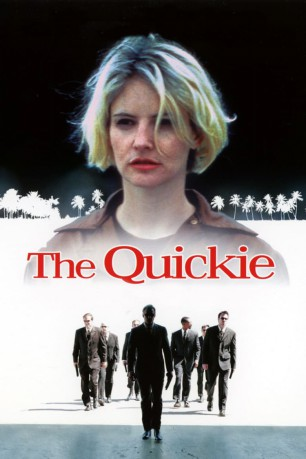

IMDB-Wertung: 5.8 / 10
IMDB-Wertung: 5.8 / 10  Metascore:
Metascore: 
A crime soap opera about a Russian mobster retiring from "the business" on New Year's Eve, only to discover he has been targeted for death by a rival mobster.
 IMDB-Wertung: 5.8 / 10 Metascore:
A crime soap opera about a Russian mobster retiring from "the business" on New Year's Eve, only to discover he has been targeted for death by a rival mobster.
Jahr: 2001
Dauer: 95 Minuten
FSK: 16
Land: England Studio: Sony Pictures Home EntertainmentTonspuren: DD2.0 - ,
Untertitel:
Auflösung: 1080p (1920x1076) Größe: 4904 MB
Regisseur: Sergei Bodrov
Drehbuch: Sergei Bodrov, Carolyn Cavallero
Soundtrack: Giya Kancheli
Darsteller:
 Kevin Brief als Caterer
Kevin Brief als Caterer Jsu Garcia als Miguel
Jsu Garcia als Miguel Evgeniy Lazarev als Uncle Anatoly
Evgeniy Lazarev als Uncle Anatoly Jennifer Jason Leigh als Lisa
Jennifer Jason Leigh als Lisa Vladimir Mashkov als Oleg
Vladimir Mashkov als Oleg Dean Stockwell als Michael
Dean Stockwell als Michael Oleg Taktarov als Boris
Oleg Taktarov als Boris Henry Thomas als Alex
Henry Thomas als Alex Ilia Volok als Slava
Ilia Volok als Slava Lesley Ann Warren als Anna
Lesley Ann Warren als AnnaDatei: X:\2001\Quickie, The (2001, FSK16, 1920x1076).mkv seit 30.12.2019
Festplatte: Gemischt-01+Anime
 Es gibt insgesamt 102 Filme in der Gruppe '2001'
Es gibt insgesamt 102 Filme in der Gruppe '2001'